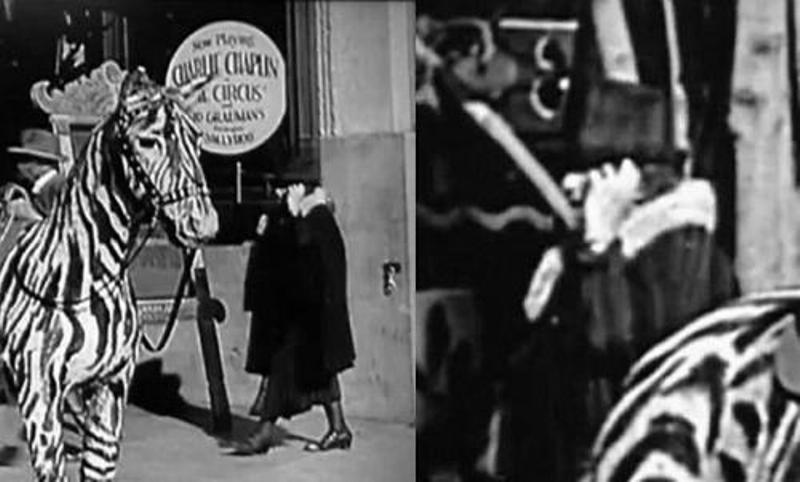
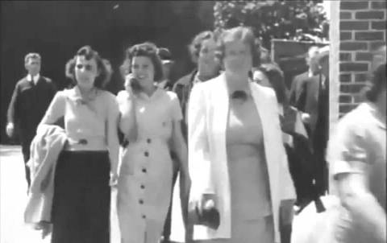

История
Эксперты опровергают "доказательства" путешествий во времени
Многочисленные фотографии и кинокадры, якобы доказывающие существование путешествий во времени, получили логическое объяснение, сообщает британский сайт Express. Издание приводит подборку из самых известных фактов, якобы доказывающих существование путешествий во времени. И приводит мнение экспертов, опровергающих доводы сторонников "теории заговора".
Например, одно из свидетельств энтузиасты нашли в немом фильме Чарли Чаплина, снятом в 1928 году. В кадр попадает прохожая, которая держит руку возле уха. Складывается впечатление, будто она разговаривает по мобильному телефону.
Однако, по словам помощника редактора The Atlantic Николаса Джексона, при внимательном изучении фильма нашлось простое объяснение. Выяснилось, что женщина попросту придерживает рукой портативный слуховой аппарат - один из тех, что были разработаны как раз в то время.
Еще один спорный момент с якобы запечатленным "мобильником" датируется 1938 годом. В черно-белый кадр попадает девушка, якобы беседующая по сотовому телефону.
При исследовании выяснилось, что энтузиасты были правы. Девушка действительно разговаривала по беспроводному телефону. Оказалось, что звали ее Гертруда Джонс, было ей 17 лет, и она стала одной из пяти участниц эксперимента по созданию беспроводного телефона. Об этом исследователям рассказал ее внук.
По его словам, Гетруда работала на заводе Дюпона. Пленка зафиксировала момент, когда она беседует с одним из инженеров.
Немало пересудов вызвала и фотография из Канадского виртуального музея. Пару лет назад она обошла практически все новостные агентства мира. Фото было сделано в ноябре 1940 года на открытии моста Саус Форк.
В толпе зевак хорошо виден высокий молодой человек, выделяющийся внешним видом. На нем солнцезащитные очки, футболка с изображением на груди, а на шее висит аппарат, в котором многие узнали поляроид. Сразу родилась версия о том, что это путешественник во времени, поскольку одет он не по моде тех лет.
К тому же в толпе ни у кого больше ничего подобного не было. Однако проведенное исследование доказало, что в 1940 году было возможно так одеться. Например, солнцезащитные очки такого стиля, как у "путешественника", появились еще в 1920-е годы.
Футболка на поверку оказалась спортивным свитером с гербом команды. И портативные фотоаппараты в то время уже выпускали. Express приводит опровержение и других нашумевших теорий. Впрочем, это не означает, что в них перестанут верить.
Путешественник во времени: "Я попал в 2749 год и провел в будущем два года"
Участник знаменитого "Филадельфийского эксперимента" Ал Билек рассказал о своём путешествии в будущее: по его словам, около шести недель он прожил в 2137 году и целых два года – в 2749-ом. Свои слова он подтверждает описанием событий, совершающихся прямо сейчас. Согласно воспоминаниям Билека о будущем, вскоре в мире воцарится Новый Мировой Порядок и мы ощутим катастрофические последствия изменения климата. И это далеко не всё.
Проект Монток – это серия засекреченных экспериментов американского правительства, которые проводились в местечке Camp Hero, недалеко от города Монток (шт. Нью-Йорк). Целью проекта было создание психологического оружия, а также исследование свойств сверхсильных электромагнитных полей для перемещения во времени, телепортации и ментального создания объектов. Билек рассказывает, что он принимал участие в Филадельфийском эксперименте.
13 августа 1943 года он находился на борту морского эсминца DE 173, который таинственным образом исчез в этот день. По словам Билека, он очнулся в госпитале, рядом со своим братом Дунканом Камероном, где провёл шесть недель, восстанавливаясь от радиационного поражения, которое он получил во время эксперимента. Медики будущего использовали для его лечения вибрационное и световое оборудование. По телевидению всё время крутили новости и образовательные передачи. Там он заметил, что из-за глобальных изменений климата на планете произошло большое количество географических перемен, которые начались до 2025 года.
Береговые линии и очертания США и Европы разительно отличались от того, что мы видим сейчас. Уровень моря поднялся, и от Флориды почти ничего не осталось. Атланта (шт. Джорджия) оказалась почти на побережье океана. Миссисипи превратилась во внутренний водный путь. Великие озера стали одним большим озером. Инфраструктура США оказалась разрушена. Таких наций как “американцы” и “канадцы” больше не существовало. В 2137 году действовало некое подобие локального военного положения. Центрального правительства не существовало. Магнитные полюса Земли начали смещаться, но к тому времени была создана структура искусственного полюса, которая позволяла предотвратить катастрофу и препятствовала значительному смещению магнитных полюсов. Население земли сократилось до 300 миллионов. Население США составляло примерно 50 миллионов.
Билек утверждает, что с 1954 по 2000 год американское правительство работало с оказавшимися в их распоряжении инопланетными технологиями. Проблемы начались в период между 2003-2005 годами. Новый Мировой Порядок постепенно прибирал к рукам всю планету, но осуществлению этих планов помешала война. В какой-то момент война вспыхнула между Россией/Китаем vs США/Европой. Многие американские города оказались разрушены. Новый Мировой Порядок потерпел крах. Правительство уже в наши дни обладает технологиями, позволяющими за считанные дни значительно снизить уровень радиации и обезвредить ядерные отходы, но отказывается к ним прибегать по политическим соображениям. В будущем эти технологии будут использованы для устранения радиационных последствий Третьей мировой войны.
После этого Билек таким же необъяснимым образом очутился в 2749 году, где пробыл почти два года. Затем он возвратился в 2013 год, где опять встретился со своим братом Дунканом, после чего они оба вернулись в 1983 год. В 2749 году Билек увидел грунтовые опоры и плавающие города. Эти города могли передвигаться по всему океану. Управление осуществляла Компьютерная система с искусственным интеллектом. Никакого правительства не было вообще. Вместо него существовала гигантская кристаллическая плавающая структура, с которой можно было общаться телепатически. Структура общества была совершенно социалистической. Каждый человек обеспечивался базовыми необходимыми для жизни благами.
Случай в Англии
Не менее странная история произошла и с англичанином Питером Уильямсом. По его словам, он попал в какое-то странное место во время грозы. После удара молнии он потерял сознание, а когда пришел в себя, то обнаружил, что заблудился.
Пройдя по узкой дороге, ему удалось остановить автомобиль и попросить о помощи. Мужчину доставили в госпиталь. Спустя некоторое время здоровье молодого человека поправилось, и он уже мог выйти на прогулку. Но поскольку его одежда была полностью испорчена, то сосед по палате одолжил ему свою. Когда Питер вышел в сад, то понял, что находится в том месте, где его настигла гроза. Уильямс захотел отблагодарить медперсонал и доброго соседа.
Ему удалось найти больницу, но там его никто не узнавал, а весь персонал клиники выглядел намного старше. Никаких записей о приеме Питера в регистрационной книге не оказалось, как и соседа по палате. Когда мужчина вспомнил о брюках, ему сказали, что это – устаревшая модель, которая не выпускается уже более 20 лет!
Загадочный поезд
В 1991 году один железнодорожный рабочий увидел, что со стороны старой ветви, где не осталось даже рельсов, идет поезд: паровоз и три вагона. Он был очень странного вида, и явно не российского производства. Поезд прошел мимо рабочего и ушел в ту сторону, в которой находился Севастополь. Информация об этом происшествии даже была напечатана в одном из изданий в 1992 году. В ней содержались данные о том, что еще в 1911 году из Рима вышел прогулочный поезд, в котором было большое количество пассажиров.
Он попал в густой туман, а затем въехал в туннель. Больше его не видели. Сам туннель был заложен камнями. Возможно, об этом и забыли бы, если бы поезд не появился в Полтавской области. Многие ученые тогда выдвинули версию о том, что этот поезд каким-то образом сумел пройти сквозь время. Некоторые из них связывают такую способность с тем, что практически в одно время, когда поезд вышел в путь, в Италии произошло мощное землетрясение, в результате которого возникли большие трещины не только на поверхности земли, но и в хрональном поле.
Нет смысла упоминать обо всех, потому как большинство их них сходны друг с другом. Практически всегда перемещения во времени имеют необратимый характер, но иногда получается так, что люди, исчезнувшие на некоторое время, потом благополучно возвращаются. К сожалению, многие из них попадают в сумасшедшие дома, поскольку в их рассказы никто не хочет верить, да и сами они не очень понимают, правда ли то, что с ними происходило.
Ученые уже на протяжении нескольких столетий пытаются решить проблему временных перемещений. Вполне может случиться так, что в скором времени эта проблема станет объективной реальностью, а не сюжетом фантастических книг и фильмов.
 Вверх
Вверх